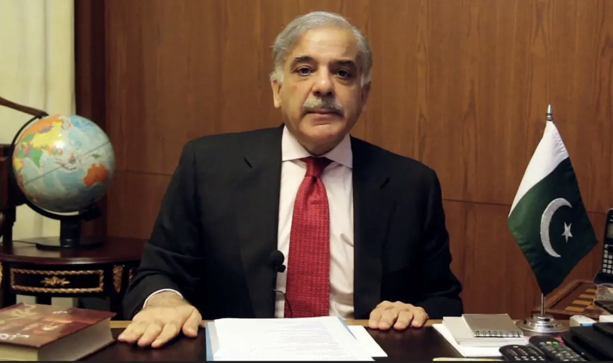
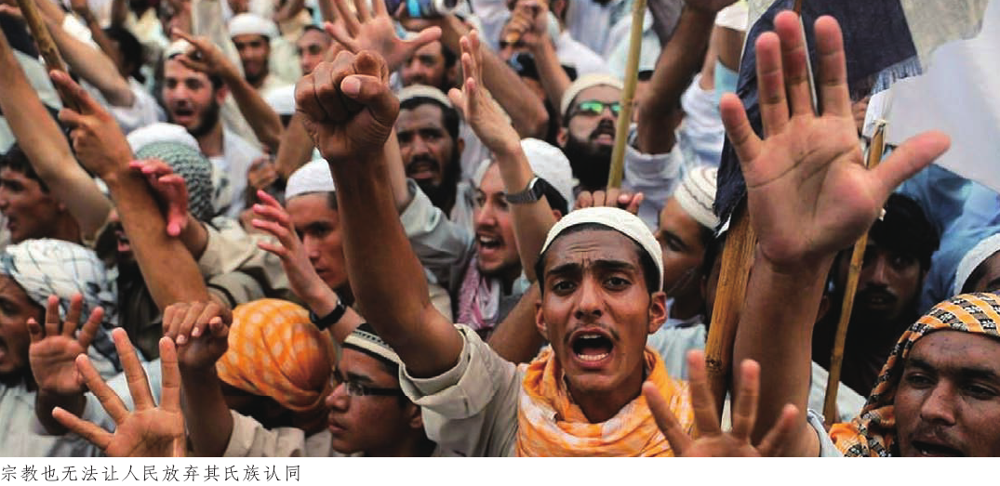
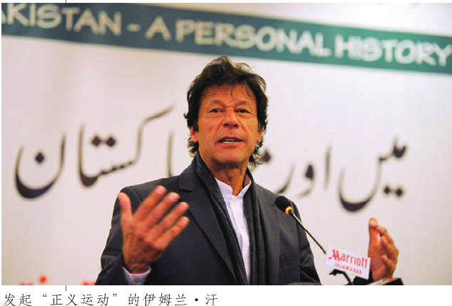

收录于合集
以下文章来源于修远基金会 ，作者叶海林
修远基金会 .
汇聚社会进步与文化复兴的深远力量

导读
4月10日，巴基斯坦国民议会、即议会下院10日凌晨通过针对总理伊姆兰·汗的不信任动议。伊姆兰·汗成为巴基斯坦历史上首位遭国民议会罢免的总理。4月11日，巴基斯坦国民议会投票选举夏巴兹·谢里夫担任第23届巴基斯坦总理。仅仅一天，巴基斯坦就迅速完成了领导人更替，不免令人惊愕，这与巴基斯坦的政党政治不无关系。
本文指出，巴基斯坦政党政治背后的操盘手是真正掌控国家命脉的世家豪门。事实上，以穆盟和人民党为代表的旁遮普和信德的世家豪强组建了此次针对伊姆兰·汗不信任动议的反对党联盟，其核心人物是多年把持旁遮普地方大权的巴基斯坦两任总理纳瓦兹·谢里夫 。此次不信任动议虽然以“经济管理不善”为由，但是在明年就是下一个大选年的背景下，反对派打“经济牌”显然是出于政治动机。
就此而言，作者认为，巴基斯坦并不存在以意识形态谱系划分的政党政治，巴基斯坦政党及其制度本质上是豪门同军队以及在各大豪门之间争权夺利的工具。 而伊姆兰·汗的力量并没有达到能够挑战传统世家豪强的地步——“要么被踩在脚下，要么被召入帐中”。抑或他会选择通过调动民粹的力量来获得更多支持，正如西方代议制所日渐表现出来的民粹主义倾向？ 与中国比邻而居的“巴铁”，是否能找到整合国民、改良国内政治的道路？欧亚系统科学研究会特编发本文，供读者思考。文章原刊于《文化纵横》，作者为中国社会科学院亚太与全球战略研究院副院长 叶海林， 仅代表作者本人观点。

夏巴兹·谢里夫
在南亚，巴基斯坦往往是作为宪政失败的案例被研究的。 自1947年8月14日抢先印度一天宣布独立以来，巴基斯坦几乎每十年就会爆发一次军人政变，政治运行呈现10年议会民主10年军人专政的循环规律 。自1988年齐亚·哈克将军空难后建立的所有民选政府，没有一个能延续到任期自然结束，实际上，除了军人总统穆沙拉夫的银行家总理肖卡特·阿齐兹，也没有一个总理能够顺利履行完职责直至任满。南亚区域国家并不以政治稳定见长，但像巴基斯坦这样如此有规律地陷入政治动荡还是不多见的。
在巴基斯坦，阿尤布·汗、齐亚·哈克以及帕维兹·穆沙拉夫间隔10年左右相继发动政变时，引起的社会震动并不像外界想象的那样巨大，甚至山雨欲来之时颇多议会政治精英前往拉瓦尔品第陆军总部游说陆军总参谋长，请求后者出面拯救国家，而当这三位果真如此行事的时候，巴基斯坦社会上下往往感到的不是紧张，而是压力被释放后的放松。实际上，在这个世界上最早成立的伊斯兰共和国，议会民主走到死胡同后由军队出面收拾残局已经成了民众的思维定势——尽管齐亚·哈克和穆沙拉夫两位将军都曾信誓旦旦他们的政变将是巴基斯坦历史上的最后一次，然而， 直至今日，军队依然是许多巴基斯坦人心目中帮助他们摆脱贪腐政府的唯一希望 。
不过，硬币总还有另外一面 。某种程度上，巴基斯坦同样可以作为宪政“成功”的案例来加以研究。这个国家三次出现军人长期执政，但每一次的结果都是军人和平向议会政党移交权力 。以政党为基础的议会运行在巴基斯坦，素来没有好成绩可言，却总是能一次次击败在社会进步和经济发展方面更加富有效率的军人政府卷土重来。至于靠了自己妻子的遇难才当上现任总统的阿西夫·扎尔达里，丑闻缠身，毫无政绩，却能依靠着高超的政治平衡术撑过了一次次议会质询、最高法院传唤以及军事政变传言，坚持到了任期最后。
很少有国家能像巴基斯坦一样，政治运行呈现如此有规律的钟摆效应。究其原因， 政党作为真正掌控国家命脉的世家豪门运用得最娴熟、作用最显著的工具，在确保豪强在军队集团的打击下每次都能全身而退并伺机反扑方面发挥了至关重要的作用 。然而，巴基斯坦政党的“积极”功能也就到此为止了。作为豪门同军队以及在各大豪门之间争权夺利的工具， 巴基斯坦政党及其相关制度在治理国家促进进步和发展方面产生的作用实际上是负面的，既不能有效地完成大众社会动员，也无法凝聚精英推进自上而下的改良 。
安瓦尔·赛义德如此评价巴基斯坦的政治运行：“人们在议会选举中进行竞争，并不是因为他们希望讨论公共政策问题，而是为了在他们各自的地区获得特权，为了从政党领导人的支持中获取回报，以及在为了他们各自选区的利益和政府官员的讨价还价中增加自己的筹码。”民主之所以在巴基斯坦的运作没有达到它本应达到的良好程度，不是因为它的政治人物们无能，而是因为他们对公共利益的投入比较薄弱。在富有才干和经验的政党领袖的控制下， 巴基斯坦的政党制度连同整个议会民主体制，堕落为政治豪强瓜分利益的工具，其功效无非是：1.确保豪强的地方势力范围；2.榨取中央资源和利益；3.对抗军队 。在一个后发国家推进革命或改良所必需的社会动员，从来不是巴基斯坦主流政党的目标。

01
控制者：穆盟和人民党
很难用传统意义上的政党光谱来描述巴基斯坦的政党， 在巴基斯坦，并不存在政党的左中右差别 。固然巴基斯坦人民党作为第四国际的正式成员，应该被列为左翼政党，但也只是徒具其表而已，就像该国历史最悠久的政党穆斯林联盟也不是其名字看上去的那样具有强烈的宗教色彩一样。
巴基斯坦穆斯林联盟（谢里夫派）是这个国家历史最悠久的全国性政党，其成立要远远早于巴基斯坦建国 。穆盟成立于1906年，其早期活动历史就是巴基斯坦的建国史。作为巴基斯坦独立运动“两个民族”理论的贯彻者，穆盟并不是一个宗教政党，强调的是穆斯林作为一个民族的身份，而不是一种宗教的信徒。但是，这一理论并不完善，伊斯兰教内部教派林立，彼此之间的区别并不小于和异教徒之间的差别。西北印度作为苏菲传统深厚的穆斯林区域，除了用笼统的穆斯林概念以外，独立运动的领袖们没有办法找到一套牢固而严密的认同架构为从印度分离提供建设性的身份依据。这一缺陷在独立运动期间是可以被掩盖或忽略的，毕竟穆斯林对印度教徒的恐惧远远超过了彼此之间的隔阂，然而一旦建国成功，穆盟的理想实际上已经实现，否定性的理念便不足以继续为这个政党提供意识形态基础。 穆盟便迅速地从一个代表全印度穆斯林的跨教派政党蜕化为只服从于其核心集团利益的地域性政党 。
这一地域便是西巴基斯坦的核心——旁遮普。旁遮普不论从人口还是就经济规模衡量，都是西巴基斯坦的核心地域， 穆盟作为巴基斯坦最重要的政党，不但是因为这个政党在巴基斯坦立国运动领袖真纳的领导下建立了巴基斯坦，更是因为它牢固地控制了旁遮普 。实际上，如果当年不是旁遮普和信德的大地主鼎力支持真纳的独立运动——这种支持的经济学理由是不言而喻的，仅凭真纳之力，巴基斯坦建国绝无可能，哪怕真纳先生是英国林肯法学院历史上最年轻的非本土律师资格获得者也无济于事。换句话说，不是穆盟在真纳的驱使下推动伊克巴尔的理想，而是真纳以及伊克巴尔（诗人、哲学家，巴基斯坦建国的“精神导师”）的理想就是旁遮普大地主们的政治诉求。 而所谓旁遮普的大地主阶层，其代表人物恰是目前唯一在世的巴基斯坦两任总理纳瓦兹·谢里夫 。他和他的兄弟沙巴兹不但掌控着旁遮普的工商业，而且多年把持穆斯林联盟。谢里夫家族的势力仅在遭到穆沙拉夫的铁拳重击时遭到过一定削弱，穆盟分裂为谢里夫派和忠于穆沙拉夫的领袖派。领袖派究其实质也不过是在谢里夫家族的压迫下不得志的舒贾特家族的政党形式罢了。
巴基斯坦人民党习惯上被称之为左翼政党，不过其内核与穆盟并无区别 ，人民党的创立者是当今巴基斯坦总统扎尔达里的岳丈、政治奇才阿里·布托。该党成立于1967年，时值阿尤布·汗政权风雨飘摇，4年后东巴基斯坦（今孟加拉国）独立运动风起云涌，阿里·布托利用军政府战争失败乘势夺权，一举将人民党推高为巴基斯坦两大政党之一，与穆盟分庭抗礼。
布托造党，随即仿效真纳被推举为终身党主席，齐亚·哈克政变后将布托绞死在拉瓦尔品第陆军中央监狱，但人民党并未群龙无首作鸟兽散。得到阿里·布托精心培养的贝娜齐尔·布托在齐亚·哈克死于空难后卷土重来，自任人民党终身主席，成为了伊斯兰世界最年轻的女总理。贝·布托夫人2007年遇刺身亡后，人民党选举布托夫人的鳏夫扎尔达里和未及弱冠的长子比拉瓦尔出任联合党主席。 自始至终，人民党都在布托家族的严密控制下 ，连布托家族流亡海外期间坚守国内为人民党看守家业将近10年的副主席法西姆都在扎尔达里掌权后很快被排挤得无影无踪。倘若不是因为扎尔达里意图打击党内元老，外省人吉拉尼断无机会栖身人民党高层并提名为总理，而吉拉尼的结局也依然是鸟尽弓藏。 人民党是不折不扣的布托党，布托家族则是巴基斯坦仅次于旁遮普的第一要省信德的世代豪门 ，早在殖民时期，阿里·布托的父亲就曾在英印政府中担任过信德的首席部长。人民党代表的并不是巴基斯坦这个国家的“进步力量”或者说城市中产阶级，恰恰相反， 布托党代表的是信德的地主-工商贵族，其基本盘面位于信德农村 。
这两个以地域和民族为内核的全国性大党外，巴基斯坦还存在着一些更加具有地方特色的政党，如盘踞在卡拉奇的代表从印度本土迁往巴基斯坦的穆斯林“莫哈吉尔”利益的统一民族运动党（MQM）、掌控开伯尔普什图瓦省的民族人民党（ANP）以及俾路支省的地头蛇俾路支民族党（BNP）。这些政党分别代表着巴基斯坦其他几个主要民族的利益，雄踞一方，利用手中牢不可破的地方选票优势保证了本省大家族的利益。 总体而言，巴基斯坦的政党总体而言是地域性质的，依托本地域本民族的选票在中央竞逐权利在地方确保豪门的利益，形成了大大小小的地方豪强集团 。
02
豪强代言人：巴基斯坦政党制度的实质
巴基斯坦的政党几乎都属于精英型政党 ，在一个迄今仍未废除封建土地所有制的农业国家来说，这种类型政党的产生、演化以及政治作用都与该国的土地制度息息相关。
穆盟和人民党的建立者分别是旁遮普和信德的世家豪强 ，他们建立政党的目的本来就不是为了进行充分的社会动员，实际上，大规模社会动员恰恰是这些世家豪强要极力避免的事情。 巴基斯坦是一个彻头彻尾的精英主义国家，这个国家的诞生完全是精英政治的产物，其政治发展的每一步几乎都被精英所决定 。巴基斯坦随时可见的大规模群众集会与这个国家的精英主义本质并不冲突，电视画面上呈现出来的街头政治不过是精英们按照自己的需求设计并制造出的公共宣传产品罢了。
西北印度是世界上最大规模的灌溉农业区，自古以来农业发达，在工业文明时代来临之前，这一区域和世界上任何相似地区一样，卓越的农业条件为地主土地所有制奠定了基础。安纳托利·列文在他负有盛名的著作《巴基斯坦：困难国度》（Anatol Lieven：Pakistan：a Hard Country，Public Affairs，2011）中争论说，将巴基斯坦的地主形容为西欧意义上的“封建主”是错误的。因为上世纪50年代到70年代的激进土地改革已经使旁遮普的绝大多数超级地主失去了他们的土地。不过列文也承认，即便如此，巴基斯坦仍然存在着大量的封建残余，比如信德地主豪强们偏爱的游猎活动，极富中世纪古风。
列文敏锐地注意到了西方意义上的封建制度和巴基斯坦的地主所有制之间的差别。在讨论土地所有制形式时，“封建”的确是一个被过度滥用的概念，而且也不适用于巴基斯坦。 在巴基斯坦，并不存在农民对于土地的依附关系，真正的问题比土地依附关系还要严重，巴基斯坦存在的是人无论走到哪里都无法摆脱的氏族纽带，无论一个人是生活在农村还是在城市，无论是佃农还是雇工，在社会上都以氏族被划分 。就像列文所注意到的那样：“在乡村以及外延到绝大部分城市，最强有力的社会单元不是个人，也不是家庭，诚然这些单元是由个人来领导的”。这个单元就是氏族。
巴基斯坦的真正豪强不是巴盟领导人纳瓦兹·谢里夫，也不是总统阿西夫·扎尔达里，更不是昙花一现的军人领袖，而是世世代代生活在各自相对固定区域的大氏族，旁遮普的谢里夫家族、信德的布托家族都是这些大氏族的代表或者核心 。他们不是简单的大土地所有者，而是各自所有区域一切的所有者。谢里夫家族拥有旁遮普最大规模的集约土地、最主要的工业资产以及相当一部分公营设施，他们的家族财产放在全球富豪榜中或许不引人注意，这既是因为不论他们多么富有，毕竟巴基斯坦整体上是一个贫困国家；也是因为他们的财产隐藏在整个家族 –氏族体系内，无法单独抽取出来和比尔·盖茨、巴菲特等人的财产相比较。
阿尤布·汗（1958～1969年任巴基斯坦总统）以及阿里·布托（1971~1977年任巴基斯坦总统）的土地改革充其量只是触及了这种氏族体制的农业经济部分，而且还不是彻底的。阿尤布·汗的土地改革半途而废，阿里·布托的改革本来就带有强烈的地方政治色彩，其用意在于打击削弱自己的旁遮普对手。阿里·布托一面大声痛斥土地兼并，一面给自己的大女儿、政治接班人招了扎尔达里这样一个俾路支 –信德大地主的儿子做夫婿本身就证明了布托土地改革的两面性。
在巴基斯坦，世家豪强掌握了一切资源，而且这种与生俱来的控制能力还得到了文化和历史传统方面的确认 。西北印度是南亚穆斯林文化的核心，这里的一切都带有强烈的莫卧尔帝国痕迹，其中就包括任何穆斯林帝国都普遍存在的封建采邑制度。只不过数百年后，“印度斯坦皇帝”这一尊号早已成为尘埃，但穆斯林社会的基本结构并没有发生太大变化。巴基斯坦从来没有发生过自下而上的社会革命，在一个氏族传统深厚的区域，马克思主义者所倡导的土地革命不过是少数革命者的幻想罢了。概言之， 在一个呈现金字塔结构的氏族社会里，居于金字塔顶端的世家豪强握有满把好牌，所有的制度设计都是在为他们的利益服务，包括政党制度在内。准确地说，政党乃至议会制度尤其体现了这种为大家族利益服务的设计动机 。
在政党层面，金字塔结构同样存在，实际上更加明显。 穆盟和人民党表面上看是党主席高高在上，实际上起支撑作用的是各个次一级地方的小地主小豪强 。正如笔者曾经访问过的萨尔果达地方行政长官所言，“在我们这儿，没有党，只有家族。”穆盟和人民党的政党结构其实也就是这个地方的氏族结构。这一点倒是和欧洲中世纪的分封制度颇为类似。大小豪强层层相套的政党结构显然不会衍生出具有改革意义的社会动员。人们在投票时不是选举自己偏爱的候选人，而是按照本人所在的家族进行投票。当然，也有例外，如1990年议会选举谢里夫席卷贝·布托获得压倒性胜利，根本原因固然是人民党的政绩实在过于糟糕，同时还必须高度重视的另一个原因则是谢里夫家族不惜重金收买了人民党的大量地方小豪强，让他们巴 基 斯 坦 的 真 正 豪强不是巴盟领导人纳瓦兹·谢里夫，也不是总统阿西夫·扎尔达里，更不是昙花一现的军人领袖，而是世世代代生活在各自相对固定区域的大氏族。拒绝派出车辆搭载乡民到投票站。巴基斯坦的历次选举，重要的不是如何提出适应选民胃口的政纲，而是如何满足大大小小的各地方豪强的胃口。 长此以往，导致的结果便是这个本来中央权威就比较有限的国家进一步去中央化 。
仅举一例，巴基斯坦在宪法上是一个典型的联邦制国家，各省均设有省议会，为本省的立法机构。中央议会分成两院，参议院按照平等一致原则在各省分配席位，众议院按照人口把各省划为数目不同的选区。在选举总统的时候，除联邦中央议会的数百名议员有权投票以外，各省议会也有权按照各自65票的权重参与投票选举。 这种制度设计的结果是大大强化了地方实力派在中央事务上的发言权 。如俾路支省议会只有65名议员，这意味着在选举总统时该省议会的议员投票权重和联邦议会参众两院的议员实际上是一样的。
出现这种奇怪制度的原因很简单，巴基斯坦建国之初政局基本上由旁遮普人所把持，其他几大民族处于被压制状态。但第三次印巴战争失败后，阿里·布托的崛起改变巴基斯坦的政治版图，由一党独大转成为两雄并立。信德豪强与旁遮普世家展开了长达40年的争权夺利，双方谁都无法取得决定性胜利。势均力敌迫使双方大力争取普什图人和俾路支人的支持，旁遮普人上台时还大打卡拉奇的莫哈吉尔牌以图对信德豪强釜底抽薪。 向地方让权成为世家豪强执政的普遍作风，既可巩固本地利益，又可削弱处在中央的对手。只有军人当政时期，才会努力采取一定的中央集权措施，但随着军人政权的还政于民，这些措施普遍无法延续 。
归根结底，建立巴基斯坦政党和政党制度的人与迄今为止运作这些政党及其配套制度的是同一伙人，他们没有任何动机去改变这套目前行之有效的制度。除非出现有能力劝服普罗大众放弃他们对氏族的忠诚而按照各自的偏好投票的真正意义上的社会动员型政党， 巴基斯坦政党的作用便永远是为大家族服务，这个国家的精英主义政治本质也不会发生任何改变 。特别需要强调的是，和其他后发国家的社会精英不同，巴基斯坦掌控一切资源的大家族甚至连在不改变产权制度前提下的经济发展都不感兴趣，原因很简单，这种发展必然导致个体意识的增强，这与世家豪强赖以维持统治的氏族制度是相矛盾的。
03
挑战者：伊促会和伊姆兰·汗
尽管根深蒂固，然而世家豪强把持的政治制度也并非不会遭遇挑战。建国60年来，巴基斯坦也曾数轮试图动摇世家豪强制度，其推动者主要是军人。但是， 由于军人政权天然缺乏合法性，这种靠军队推动社会变革的努力很难持续，每当军队退出政治舞台，改变家族政治的努力就会随之宣告失败 。而且，军队的社会改良尝试具有明显的边际效应递减趋势，阿尤布·汗的权威远远大于齐亚·哈克，形单影只的穆沙拉夫充其量也仅仅是触碰了一下巴基斯坦陈旧社会结构的边缘而已。抛开各自的历史背景不谈，世家豪强抗御军事打击的能力不断增强是一个不争的事实。阿尤布·汗可以把大地主们赶出自己的办公室，无人敢提出异议；齐亚·哈克为了巩固统治却不得不下令处决阿里·布托，其统治不仅要靠陆军的土黄色制服，还得靠刺刀；穆沙拉夫则根本无法触动世家豪强的利益，甚至不得不依靠反水出来的其他豪门来对抗谢里夫家族。
军队无法完成社会变革，其他的政治力量是否具有这种潜质呢？ 作为一个伊斯兰国家，宗教力量在巴基斯坦的政治舞台上占有不容忽视的一席之地 。毛杜迪创立的伊斯兰促进会是全世界第一个伊斯兰宗教政党，也是巴基斯坦社会动员能力最强的政党，有能力在全国任何地方组织起百万人规模的群众集会。而这个政党本身毫无家族色彩。伊促会是巴基斯坦唯一的由全体党员直接选举产生党主席的全国性政党，仅凭这一点，就被很多人看成是改变巴基斯坦家族政治的希望。
但是，就历次选举结果而论，伊促会及其所代表的阶层并不具备和世家豪强对抗的能力。巴基斯坦只有1亿多人口，能够动员这个国家民众的1%同时出现在一个场合，这样的政党应该能在选举中获得相当大的优势才符合逻辑。事实却是伊促会的选票从来不曾超过总票数的10%。不是民众不认同伊促会的理念，在巴基斯坦的城市和乡村，大量的底层民众每周都在聆听隶属于伊促会的毛拉宣讲宗教劝导，但这并不意味着他们敢于违抗控制本氏族的豪强的命令去选举毛拉们建议的政党和候选人。 伊促会的动员能力在转化为选票方面并不比军队的刺刀更有效，两者都不是控制民众经济和社会地位的世家豪强的对手 。
更何况，伊促会并不是巴基斯坦唯一的宗教政党，巴基斯坦教派林立，相当多数的教派并不认同伊促会的理念。要想带领全体巴基斯坦穆斯林建立一个伊促会所倡导的“纯洁国家”，毛杜迪的信徒得先摆平其他教派长老才行。穆沙拉夫执政时期伊促会曾经和其他五个宗教政党合作组建联合行动大会党（MMA），最终还是不欢而散。

近年来，巴基斯坦政坛还崛起了一股不同的新兴力量，即伊姆兰·汗所建立的巴基斯坦正义运动（PTI）。伊姆兰·汗是普什图人，前任巴基斯坦国家板球队队长，曾经率领球队在1992年为巴基斯坦赢得了迄今为止唯一的一届板球世界杯，是广大巴基斯坦民众心目中的国家英雄。伊姆兰·汗退役后于1996年建立了“正义运动”，以反家族统治反腐败为旗号投身政治活动。目前，正义运动已经正式注册为政党，并参加了自1997年以来的议会选举。 作为一个青年人普遍给予厚望的新兴政党，正义运动党的出现一定程度冲击到了传统的巴基斯坦政治格局，或许能够成为这个国家的变革力量。但这也只是一种可能性而已，并且前景不太令人乐观 。
究其原因，仍然是伊姆兰·汗的力量并没有达到能够挑战传统世家豪强的地步。青年和城市中产阶级喜欢伊姆兰·汗，要求变革，但在投票时会不会坚持自己的偏好只有在选举时才能得到检验 。伊姆兰·汗并非仅靠自己的世界杯，普遍认为，这位英语流利富于国际视野的生于1952年的“老青年”得到了军队的幕后支持，其所拥有的大量社会慈善机构也在发挥触角作用。尽管如此，历届选举，正义运动党还是被传统的世家豪强压得喘不过气来。1997年议会选举处子秀，一个议席也没有拿到。目前，为了摆脱得势不得分的窘境，正义运动党不得不大开方便之门，招纳地方小豪强加入，以便提升得票率。这一政策对于正义运动党改变选举困境可能是有效的，但存在着巨大甚至可能是致命的副作用，即该党有可能迅速“传统化”，沦落为藏污纳垢的又一家族政党。
关于伊姆兰·汗，普遍的猜测是即便这位前运动员能够在2013年实现历史突破，改变巴基斯坦的世家豪强政治传统也不过是正义运动党无法兑现的诺言。说到底，一个板球队长能奈世代公侯何？要么被踩在脚下，要么被召入帐中，除非伊姆兰·汗有本事打碎巴基斯坦的氏族社会结构，否则结局无非是在前者之间做一选择罢了。这并非是在鼓吹巴基斯坦的宿命论，只是必须承认，不管在纸面上巴基斯坦的政治制度包括其政党制度，与西方国家存在多少类似， 这个国家民众的身份还是由其姓氏来决定和区分的 。这一点在发生改变之前，政党及其整个制度安排都只能是世家豪门用来互相争斗以及抵御共同威胁的工具。
排版 | 汪平平 苏伊文
文章来源于《文化纵横》，文章观点不代表本平台观点。